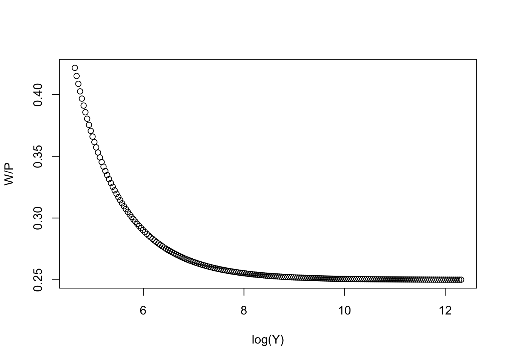

Y <- as.numeric()
s <- 0.2
alpha <- 0.01
#s <- seq(0.01:0.9, by=0.01)
# r <- seq(0.01:0.9, by=0.01)
k <- 4
P0 <- 70
W0 <- 30
W <- as.numeric()
P <- as.numeric()Türkiye’de Kapitalist Servet
Yüzde Bir
Son iki yazımızda servet üzerine odaklandık. Derdimiz öncelikle bir döküm çıkarmaktı. Birkaç çıkarım da yaptık. Bu yazıda servet ve sermaye arasındaki kompleks ilişkinin Türkiye kapitalizmini ne denli çarpıklaştırdığına odaklanacağız.
Öncelikle vurgulayacağımız nokta servet sahiplerinin tepesinde olanlarla sermaye stoku sahipliğinin tepesinde olanların yüzde 99 örtüştüğüdür. Dolayısıyla aralarında bir çatışma yoktur. Ülke ekonomisine yön veren servet ve sermaye sahipleri aynı kişilerdir.
Çarpıklıklar
Yüzyıllık kapitalist serüvenin sonunda Türkiye’de istihdam oranı %48 ve GSYH’dan emeğin aldığı pay %30 civarındadır.
Temel dinamikleri anlamak için basit bir modelle başlayalım. Esin kaynağımız Prezoworski (1993).
Verili bir dönemde toplam gelir ücret ve karın toplamından oluşur.
\(Y_{t} = W_{t} + P_{t}\)
Normal şartlarda işçiler verimli olmak için durumlarının iyileşmesini isterler. Bir önceki dönemdeki ücretlerinin iyileştirilmesi gerekir.
\(W_{t}^{d}=W_{t-1} + \alpha P_{t-1}\)
Çok küçük de olsa \(\alpha\) kadar bir miktar bir önceki dönemin karlarından ücretlere aktarılmalıdır ki işçiler verimli çalışsınlar.
Üretim doğal olarak işçilerden daha çok kapitalistlerin tercihlerine bağlıdır.
\(Y_{t+1} = W_{t} + (1 + s/k)P_{t}\)
Burada \(k\) sermaye-üretim katsayısı ve \(s\) kapitalistlerin tasarruf oranıdır.
Kararlı denge noktasına
\(W_{t}^{d}=W_{t}\)
olduğu durumda ulaşılır.
Karın toplam gelirdeki başlangıç oranını %70 aldık. $s$, tasarruf oranı %20, sermaye-üretim oranı, \(k\) olarak 4 ve \(\alpha=0.01\) aldık.
Y[1] <- W0 + (1 + s/k)*P0
W[1] <- W0 + alpha*P0
P[1] <- Y[1]-W[1]
for (i in 2:200) {
Y[i] <- W[i-1] + (1+s/k)*P[i-1]
W[i] <- W[i-1] + alpha*P[i-1]
P[i] <- Y[i]-W[i]
}Bir süre sonra dinamik kararlı hale geliyor.
plot(log(Y), W/P)
Grafiğin y-eksenine dikkat edelim. Emeğin payının karın payına oranını gösteriyor.